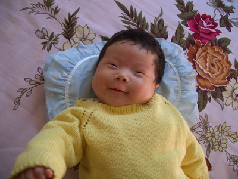
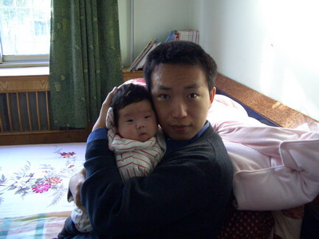

曼曼在第二个月可以趴在床上抬头，与床成90度，并且能坚持几十秒钟。
曼曼的笑容越来越多，喜欢和人说话，但妈妈忙着不能理她时也可以自己玩上半天。

曼曼对音乐和玩具还是不太感兴趣，对妈妈打印的黑白图画也不太喜欢，最多注视十秒钟左右。
曼曼晚上睡觉很好，满两个月的时候已经可以一觉睡到早上五点，但是早上六七点钟要起床的时候总是有点闹。
曼曼第二个月体重增长很快，已经长到12斤（其实不止，医生把她的衣服剪掉了1斤2两），身长58厘米。
晚上睡觉前脱掉棉袄只穿内衣的时候，曼曼马上会把右手捏成小拳头塞到自己嘴里高兴的吮上半天。

爸爸早就忘了说过更想要一个男孩，疼爱曼曼有如掌上明珠，真是捧在手里怕掉了，含在嘴里怕化了。